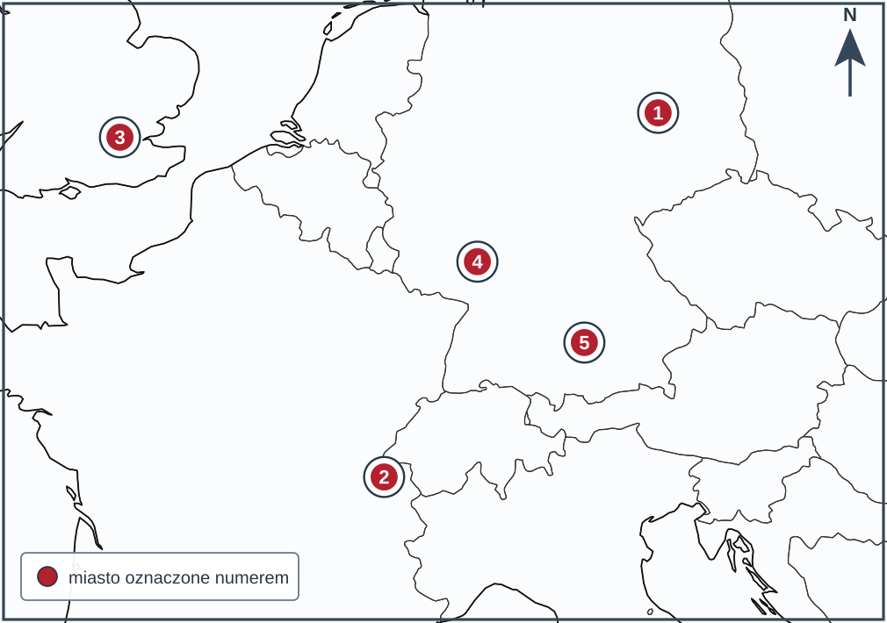
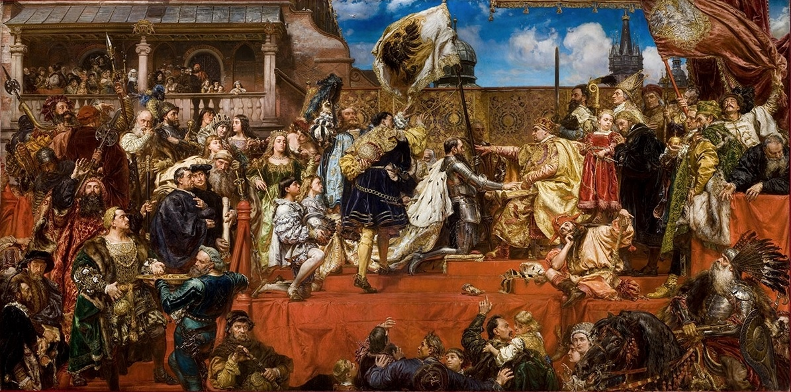

KOD UCZNIA:
Materiał autorski do ćwiczeń, opracowany na podstawie regulaminu szczegółowego oraz archiwalnych arkuszy etapu szkolnego Kujawsko-Pomorskiego Kuratora Oświaty z lat 2018/2019–2025/2026. Nie jest oficjalnym arkuszem konkursowym.
Dopasuj osiągnięcie do cywilizacji. Wpisz litery A–G. Jedna odpowiedź jest zbędna.
| 1. Spisanie jednego z najstarszych zbiorów praw – kodeksu Hammurabiego. | |
| 2. Wytwarzanie papirusu i wznoszenie piramid grobowych. | |
| 3. Stworzenie alfabetu, od którego wywodzą się pisma europejskie. | |
| 4. Narodziny teatru oraz igrzysk olimpijskich. | |
| 5. Budowa akweduktów, utwardzonych dróg i łuków triumfalnych. | |
| 6. Wynalezienie papieru, jedwabiu i prochu. |
Oceń prawdziwość zdań. Wpisz P albo F.
| 1. Pod Termopilami niewielki oddział Spartan pod wodzą Leonidasa powstrzymywał wojska perskie. | |
| 2. Bitwa pod Salaminą była zwycięską bitwą morską Greków. | |
| 3. Aleksander Wielki był władcą Sparty. | |
| 4. Aleksander Wielki pokonał państwo perskie i dotarł ze swoją armią aż do Indii. | |
| 5. Kulturę powstałą z połączenia cywilizacji greckiej i wschodniej nazywamy hellenistyczną. |
Uzupełnij tekst. W każdym nawiasie podkreśl lub zapisz jedną poprawną odpowiedź.
Według tradycji Rzym został założony w (1. 753 / 476) r. p.n.e. Po obaleniu władzy królów powstała (2. republika / demokracja). W wyniku wojen z (3. Kartaginą / Atenami), zwanych punickimi, Rzym opanował zachodnią część basenu Morza Śródziemnego. W I w. p.n.e. wielkie znaczenie zdobył (4. Juliusz Cezar / Hannibal), który został dożywotnim dyktatorem i zginął w zamachu. Jego następca Oktawian przyjął tytuł (5. Augusta / faraona) i stał się pierwszym cesarzem. Cesarstwo zachodniorzymskie upadło w (6. 476 / 1453) r. n.e.
Dopasuj postać do jej dokonania. Wpisz litery A–E. Jedna odpowiedź jest zbędna.
| 1. Autor „Iliady” i „Odysei”. | |
| 2. Dziejopisarz nazywany „ojcem historii”. | |
| 3. Uczony, matematyk i wynalazca pochodzący z Syrakuz. | |
| 4. Rzeźbiarz, twórca posągu Zeusa w Olimpii. |
Oceń prawdziwość zdań. Wpisz P albo F.
| 1. Wielka Karta Swobód, wydana w 1215 r., ograniczyła władzę króla Anglii. | |
| 2. Parlament angielski dzielił się na Izbę Lordów i Izbę Gmin. | |
| 3. Stany Generalne były zgromadzeniem stanowym we Francji. | |
| 4. Monarchia stanowa oznaczała, że władca rządził bez udziału przedstawicieli stanów. | |
| 5. Wielką Kartę Swobód wydał król Jan bez Ziemi. |
Dopisz pojęcie lub nazwę pasującą do opisu.
| 1. Nazwa konfliktu między Anglią a Francją, toczonego z przerwami w latach 1337–1453. | |
| 2. Francuska bohaterka, która doprowadziła do odsieczy Orleanu, a następnie została spalona na stosie. | |
| 3. Epidemia dżumy, która w połowie XIV w. zdziesiątkowała ludność Europy. | |
| 4. Rozłam w Kościele zachodnim, w czasie którego jednocześnie urzędowało dwóch papieży. |
Uporządkuj wydarzenia chronologicznie. Wpisz cyfry od 1 (najwcześniejsze) do 6 (najpóźniejsze).
| A. Zawarcie unii w Krewie. | |
| B. Bitwa pod Grunwaldem. | |
| C. Zawarcie pierwszego pokoju toruńskiego. | |
| D. Koronacja Jadwigi na króla Polski. | |
| E. Zawarcie drugiego pokoju toruńskiego. | |
| F. Chrzest Litwy. |
Na współczesnej mapie konturowej Europy oznaczono pięć miejsc związanych z reformacją. Do każdego opisu dopisz właściwy numer 1–5.

Mapa bazowa: SimpleMapLab na podstawie danych Natural Earth 1:50 mln, domena publiczna (CC0); oznaczenia i opracowanie zadania: własne.
| A. Miasto, w którym Marcin Luter ogłosił 95 tez. | |
| B. Miasto, w którym działał Jan Kalwin. | |
| C. Stolica państwa, którego król zerwał z papiestwem i stanął na czele Kościoła. | |
| D. Miasto, w którym Luter przed sejmem Rzeszy odmówił odwołania swoich nauk. | |
| E. Miasto, w którym w 1555 r. zawarto pokój religijny w Rzeszy. |
F. Podaj rok ogłoszenia 95 tez przez Marcina Lutra.

Jan Matejko, „Hołd pruski”, obraz ukończony w 1882 r.; Galeria Sztuki Polskiej XIX wieku w Sukiennicach, Muzeum Narodowe w Krakowie (depozyt Zamku Królewskiego na Wawelu). Reprodukcja: Wikimedia Commons, domena publiczna.
1. Podaj imię i nazwisko malarza, który namalował ten obraz.
2. Podaj nazwę wydarzenia przedstawionego na obrazie.
3. Podaj rok, w którym doszło do tego wydarzenia.
4. Podaj imię i przydomek króla Polski, przed którym złożono hołd.
5. Jak nazwano państwo powstałe z ziem zakonu krzyżackiego, które stało się lennem Polski?
Dopasuj postać do opisu. Wpisz litery A–F. Jedna odpowiedź jest zbędna.
| 1. Poeta, autor „Trenów” i „Fraszek”. | |
| 2. Pisarz, autor słów „iż Polacy nie gęsi, iż swój język mają”. | |
| 3. Autor dzieła „O poprawie Rzeczypospolitej”. | |
| 4. Włoski architekt, twórca kaplicy Zygmuntowskiej na Wawelu. | |
| 5. Ostatni król z dynastii Jagiellonów. |
Oceń prawdziwość zdań. Wpisz P albo F.
| 1. Konfederacja warszawska z 1573 r. zapewniała szlachcie pokój religijny. | |
| 2. W Rzeczypospolitej obok katolików mieszkali prawosławni, protestanci, Żydzi i muzułmanie. | |
| 3. Unia brzeska z 1596 r. doprowadziła do powstania Kościoła unickiego (greckokatolickiego). | |
| 4. Rzeczpospolita Obojga Narodów była państwem jednolitym narodowo i wyznaniowo. | |
| 5. Braci polskich, zwanych arianami, wygnano z Rzeczypospolitej w XVII w. |
Rozwiąż krzyżówkę, a następnie wyjaśnij znaczenie hasła z zaznaczonej kolumny.
| 1. Stan społeczny, który w Rzeczypospolitej posiadał pełnię praw politycznych. |
| 2. Wybór króla dokonywany przez ogół szlachty na polu pod Warszawą. |
| 3. Zakon powstały w okresie reformy Kościoła katolickiego, prowadzący kolegia. |
| 4. Najbogatszy przedstawiciel szlachty, właściciel rozległych dóbr ziemskich. |
| 5. Kraina nad Bałtykiem, o którą Rzeczpospolita toczyła wojny ze Szwecją. |
| 6. Ludność Zaporoża, która w 1648 r. wznieciła powstanie pod wodzą Bohdana Chmielnickiego. |
| 1. | ||||||||
| 2. | ||||||||
| 3. | ||||||||
| 4. | ||||||||
| 5. | ||||||||
| 6. |
Hasło:
Wyjaśnij, czym było hasło i jaką rolę pełniło w Rzeczypospolitej. (1 p.)
Oceń prawdziwość zdań. Wpisz P albo F.
| 1. Wojna trzydziestoletnia toczyła się w latach 1618–1648. | |
| 2. Bezpośrednim powodem wybuchu wojny była defenestracja praska. | |
| 3. Wojna zakończyła się zawarciem pokoju westfalskiego. | |
| 4. Rzeczpospolita była jednym z głównych uczestników wojny trzydziestoletniej. |
W namiotach wezyrskich 13 IX 1683, w nocy.
„Jedyna duszy i serca pociecho, najśliczniejsza i najukochańsza Marysieńku!
Bóg i Pan nasz na wieki błogosławiony dał zwycięstwo i sławę narodowi naszemu, o jakiej wieki przeszłe nigdy nie słyszały. Działa wszystkie, obóz wszystek, dostatki nieoszacowane dostały się w ręce nasze. Nieprzyjaciel, zasławszy trupem [...] pola i obóz, ucieka w konfuzji [...]”.
List z 13 września 1683 r. Cyt. za: Jan Sobieski. Listy do Marysieńki, Wirtualna Biblioteka Literatury Polskiej, Uniwersytet Gdański (pisownia uwspółcześniona, skróty zaznaczono). Objaśnienia: działa – armaty, konfuzja – zamieszanie, popłoch.
1. Podaj imię i nazwisko autora listu. (1 p.)
2. Podaj nazwę bitwy, o której pisze autor (1 p.), oraz rok jej stoczenia (1 p.).
3. Z jakim państwem toczyła wówczas wojnę Rzeczpospolita? (1 p.)
4. Do kogo skierowany jest ten list? (1 p.)
5. Wypisz z tekstu fragment świadczący o rozmiarach zdobyczy wojennych. (1 p.)
Dopasuj pojęcie lub postać do opisu. Wpisz litery A–F. Jedna odpowiedź jest zbędna.
| 1. Król Francji nazywany Królem Słońce, któremu przypisuje się słowa „Państwo to ja”. | |
| 2. Rezydencja królewska pod Paryżem, wzorowana przez inne dwory europejskie. | |
| 3. Ustrój, w którym władca skupia w swoim ręku pełnię władzy. | |
| 4. Ustrój ukształtowany w Anglii, w którym władzę króla ogranicza parlament. | |
| 5. Król Anglii stracony w 1649 r. w czasie rewolucji. |
1. Podaj nazwę dynastii, z której pochodzili królowie August II i August III.
2. Jak nazywamy połączenie dwóch państw osobą wspólnego władcy?
3. Podaj przydomek króla Augusta II.
4. Wyjaśnij, jaką ocenę czasów saskich wyraża powiedzenie „za króla Sasa jedz, pij i popuszczaj pasa”.
5. Jak nazwano sejm z 1717 r., na którym posłom nie pozwolono zabrać głosu?
Dopasuj postać do opisu. Wpisz litery A–F. Jedna odpowiedź jest zbędna.
| 1. Uczony, który sformułował prawo powszechnego ciążenia. | |
| 2. Myśliciel, który przedstawił zasadę trójpodziału władzy. | |
| 3. Autor koncepcji umowy społecznej, głoszący, że władza pochodzi od ludu. | |
| 4. Redaktor „Wielkiej Encyklopedii Francuskiej”. | |
| 5. Uczony zmuszony do odwołania poglądu o ruchu Ziemi wokół Słońca. |
Oceń prawdziwość zdań. Wpisz P albo F.
| 1. Konfederację barską zawiązano w 1768 r. w obronie wiary katolickiej i niezależności Rzeczypospolitej. | |
| 2. Konfederacja barska zakończyła się zwycięstwem konfederatów. | |
| 3. Pierwszego rozbioru Polski dokonały w 1772 r. Rosja, Prusy i Austria. | |
| 4. Postanowienia pierwszego rozbioru zatwierdził sejm rozbiorowy obradujący w 1773 r. | |
| 5. Komisja Edukacji Narodowej, powołana w 1773 r., była pierwszą w Europie władzą oświatową o randze ministerstwa. |
Oceń, czy podane zjawisko było przyczyną (P), czy skutkiem (S) upadku Rzeczypospolitej.
| 1. Liberum veto, które paraliżowało obrady sejmu. | |
| 2. Słabość i mała liczebność wojska Rzeczypospolitej. | |
| 3. Ingerencja państw sąsiednich w wewnętrzne sprawy Rzeczypospolitej. | |
| 4. Zniknięcie państwa polskiego z mapy Europy na 123 lata. | |
| 5. Podział ziem Rzeczypospolitej między Rosję, Prusy i Austrię. | |
| 6. Wprowadzenie na ziemiach polskich prawa i administracji państw zaborczych. |
Jeżeli test jest przeprowadzany w warunkach konkursowych, odpowiedzi można przenieść na tę kartę.
| Zadanie | Odpowiedzi |
|---|---|
| I | 1.__ 2.__ 3.__ 4.__ 5.__ 6.__ |
| II | 1.__ 2.__ 3.__ 4.__ 5.__ |
| III | 1._______ 2._______ 3._______ 4._______ 5._______ 6._______ |
| IV | 1.__ 2.__ 3.__ 4.__ |
| V | 1.__ 2.__ 3.__ 4.__ 5.__ |
| VI | 1.____________ 2.____________ 3.____________ 4.____________ |
| VII | A.__ B.__ C.__ D.__ E.__ F.__ |
| VIII | A.__ B.__ C.__ D.__ E.__ F.________ |
| IX | 1.____________ 2.____________ 3.______ 4.____________ 5.____________ |
| X | 1.__ 2.__ 3.__ 4.__ 5.__ |
| XI | 1.__ 2.__ 3.__ 4.__ 5.__ |
| XII | 1._______ 2._______ 3._______ 4._______ 5._______ 6._______ hasło: _______ |
| XIII | 1.__ 2.__ 3.__ 4.__ |
| XIV | odpowiedzi zapisz w arkuszu |
| XV | 1.__ 2.__ 3.__ 4.__ 5.__ |
| XVI | 1.____________ 2.____________ 3.________ 5.____________ (odpowiedź na pytanie 4. zapisz w arkuszu) |
| XVII | 1.__ 2.__ 3.__ 4.__ 5.__ |
| XVIII | 1.__ 2.__ 3.__ 4.__ 5.__ |
| XIX | 1.__ 2.__ 3.__ 4.__ 5.__ 6.__ |
Wynik: / 100 p.